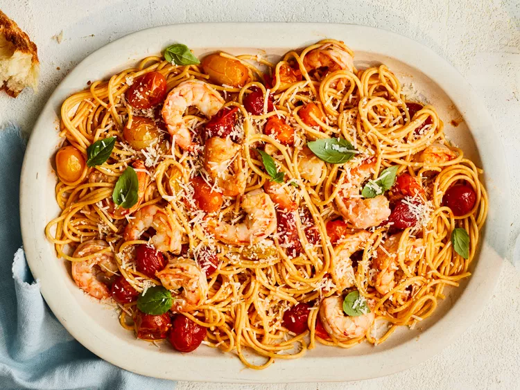

Shrimp and Burst Cherry Tomato Pasta

Two summer favorites in one: tomatoes and shrimp. Whole cherry tomatoes are cooked on the stove top until they gently burst, creating the base for an effortless sauce. A mix of both yellow and red cherry tomatoes add contrast to the dish, especially when the dish is finished with fresh basil. The Parmesan brings the entire dish together, blending with reserved pasta water to create a silky sauce. The key is to buy a block of Parmesan and grate it yourself, as the pre-grated kind can clump and won't melt to create a smooth sauce. Some say cheese and seafood shouldn't mix, but this recipe is a pretty compelling reason for why they go together.
Ingredients:
- 6 Tbsp. extra-virgin olive oil, divided
- 1 lb. large shrimp, peeled and deveined
- 2 tsp. kosher salt, divided
- 6 garlic cloves, thinly sliced
- 2 lb. red and yellow cherry tomatoes
- ¼ tsp. crushed red pepper
- 1 lb. uncooked spaghetti
- 2 oz. Parmesan cheese, grated (about 1/2 cup), plus more for serving
- Fresh basil, for garnish
Steps:
- Heat 2 tablespoons of the oil in a large deep skillet over medium-high. Pat shrimp dry with paper towels. Season shrimp with 1/2 teaspoon of the salt, and add to skillet. Cook, stirring often, until shrimp are cooked through, about 3 minutes. Transfer to a plate; set aside.
- Heat remaining 4 tablespoons oil in same skillet over medium-high. Add garlic, and cook, stirring often, until aromatic, about 1 minute. Add tomatoes, crushed red pepper, and remaining 1 1/2 teaspoons salt. Cover and cook, stirring occasionally, until tomatoes are tender and release their juices, about 14 minutes.
- Meanwhile, bring a large pot of salted water to a boil over high. Cook spaghetti until al dente. Drain spaghetti, reserving 1 cup pasta water.
- Add shrimp and any accumulated juices to tomatoes, and cook over medium. Add cooked spaghetti, Parmesan, and 1/2 cup reserved pasta water, tossing to coat. Cook, stirring occasionally, until sauce clings to pasta. Remove from heat. Garnish with fresh basil, if desired. Serve with additional Parmesan, if desired.